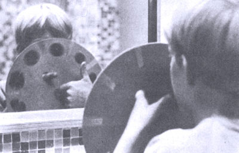
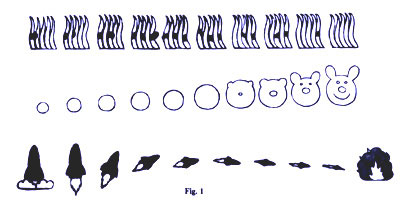
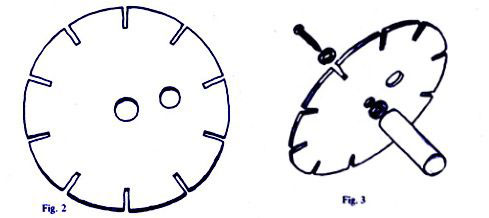
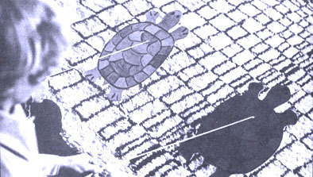
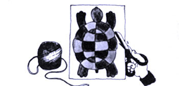
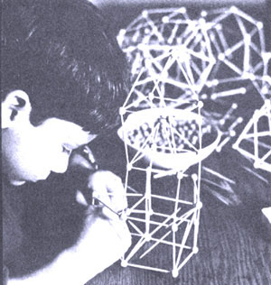
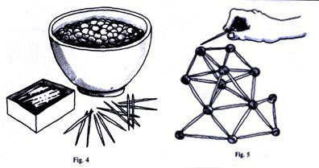

Toys-especially the homemade kind-have a special fascination around Christmas. If the seasonal bug is biting you, Workman Publishing Company has just what you need: a fat paperback full of low-cost, do-it-yourself playthings to be made for, with or by children. Where else can you buy that much fun for $3.95?
Steven Caney's Toybook is copyright©1972 by Steven Caney. The following excerpts are reprinted with the permission of Workman Publishing Company, Inc.
Did you ever wonder how a movie camera or a movie projector works? If you take a close look at a piece of movie film, you'll see a series of separate still photographs, each slightly different from the one before it. A movie camera takes each of the still pictures in very quick order...about twenty-four pictures every second; the movie projector shows the pictures back to you at the same speed, so the still pictures look as though they are moving. Movies are really an optical illusion.
The MOVIE WHEEL can be both a movie camera and a movie projector. If you spin the wheel while looking through the slits, any motion you see will appear as a series of still "stop action" pictures. Here are some things to look at that you might find interesting: waving arms, a dripping faucet, yourself in a mirror, a spinning coin, ping-pong games, a bouncing rubber ball, spinning bicycle wheels, a television show.
Start by turning the wheel very slowly, and then turn it faster. What happens? The slots in the wheel act as shutters that open and close, letting the light come through for only a fraction of a second at a time. The brighter the light, the more fight will come through the shutter, and the brighter the image will be. A movie camera shutter works the same way. (Maybe someone will show you a camera shutter.)
The MOVIE WHEEL can also "show movies" by making a series of still pictures move. Draw a series of separate, sequential pictures, each between the slots on the wheel, ten pictures in all (see directions for making MOVIE WHEEL below). The pictures can be quite simple-a ball getting bigger, for example-or quite complicated. The three picture series in Fig. 1 will give you some ideas. Stand in front of a mirror and look through the slits while spinning the wheel. Be sure the drawing side of the wheel is facing the mirror and is well lit. The pictures will appear to move and come to life. Turn the wheel at different speeds. What do you see? What do you think might happen if you drew a series of nine or eleven pictures evenly spaced around the wheel? Try it.
MATERIALS AND TOOLS
•cardboard
•pencil
•crayons
•scissors
•ruler
These instructions will show you how to make a simple cardboard MOVIE WHEEL. It is good for experimenting and will work fine, but it isn't very durable and you can't erase the drawings to do new ones. But before you decide to make the sturdier wooden version shown in Fig. 3, experiment first with the cardboard model. It is easy and quick to make.
Cut a cardboard circle about 8 to 12 inches round. Draw, then cut, ten slits in the edge of the wheel, Fig. 2. The slits should be as evenly spaced as you can figure them, and about 1/8 inch wide by 1to 1-1/2 inches long. (Later you may want to experiment with these dimensions to see what happens.) Cut a fingerhole in the center of the disc, and another hole an inch or two away for turning. Color the wheel a dark color with poster paint, color markers or crayons (flat black is recommended). Remember that theMOVIE WHEEL works best in very bright light.
The wood version of the MOVIE WHEEL will require 1/4-inch plywood, 1/8-inch Masonite or something similar. The entire disc should be painted flat black so pictures can be drawn with chalk and erased. Screw a wood dowel-long enough to hold onto easily-into one side of the wheel, through the center hole, Fig. 3. Use a wood screw and two flat washers, allowing the wheel sufficient freedom to spin in place. The dowel acts as a permanent pivot.
To work the cardboard MOVIE WHEEL, put your index finger, as if it were an axle, through the center hole from behind. From the front-the side facing you-place the index finger of the other hand through the off-center hole, and rotate the wheel as if you were dialing a telephone dial round and round.
The wooden wheel is worked similarly except that the dowel is held from behind while the wheel is spun with the finger from the front. The wheel moves, but the dowel remains stationary.
Kids like to play competitive games...as long as the spirit of fun always comes first. A game is the chance to measure your abilities against others', to let off steam and to exercise your alertness.The GREAT TURTLE RACE is a game of skill, but an equal challenge to everyone in the family. It's impossible to resist playing, and kids seem to have a special knack for winning. The game is especially appropriate for parties or rainy day fun.
•stiff
•cardboard
•pencil
•crayons
•string scissors
If you're going to have a race, make two or more turtles, but first practice by making one. Find a piece of stiff cardboard about 10 or 12 inches high. Some materials that work well are shirt, gift or shoebox cardboard, the back of a paper pad or a corrugated box. Draw a turtle-shaped pattern on the cardboard. It's not important that the turtle be the exact shape of the one in the illustration, but be certain that the rear legs go below the body and tail. Cut out the turtle shape, and punch a hole through the cardboard a little below the turtle's head. The hole should be about as big around as a pencil (so you might use a pencil to punch the hole). Decorate the turtle by drawing the head, eyes, legs and shell pattern on both sides. Cut a piece of string about 10 feet long...you can experiment later with longer or shorter pieces of string. Tie one end of the string to a chair or table leg at about the same height as the turtle is tall. Thread the other end of the string through the hole in the turtle. Now you're ready to practice racing. Hold the loose end of the string in your hand and pull it taut. By slackening the string slightly, and then giving it a small jerk, you can make the turtle "walk". Remember that it does take some practice to get it just right. When the turtle gets to either end of the string, jerk the string up slightly, and the turtle will flip over and be ready to race back. Now you can make some more turtles and have races. Before a race, it's a good idea to agree on the start and finish lines, and the number of laps. Although the turtle can race much faster on rough or carpeted floors, the racing becomes much more difficult and challenging on a smooth floor. Instead of drawing a turtle pattern, you might want to invent other racers, like a car, rabbit, boat, person, airplane, dog, horse or whatever.
This is so nifty. Toothpick rods and pea connectors let you build the most incredible structures and abstract versions of anything...flat patterns, domes, geometric forms or the Empire State Building.
Construction play increases skills by demanding dexterity, imagination and creativity. There is no "right way" to do PEA AND TOOTHPICK BUILDING, so there is no wrong way either. Three-year-olds and adult engineers are equally fascinated. It's very inexpensive, and the structures you build are permanent. They stay attached, to be used as ornaments, mobiles, toys or whatever.
dried peas
large bowl
toothpicks
water
The peas must be prepared ahead of time. Pour a package of dried peas into a large bowl of water, making sure the water completely covers the peas by an inch, Fig. 4. Let the peas soak at least six to nine hours. It's sometimes best to do the pea preparation just before you go to bed, so the peas will soak overnight. That avoids the uncertainty of "are they ready yet". The soaking will soften the peas just enough, but there's little problem of over soaking. (If the peas stay in the water for more than a couple of days, they will begin to sprout, and that's fun also.) Gather a box or two of toothpicks. The round ones work best, but if all you have are flat toothpicks, that's okay too. Building is done by using the peas as connectors and sticking the toothpicks into them, Fig. 5. The smaller peas hold best. Constructions can be as simple or complex as you want, but you should complete whatever you build at one time, and then put the construction aside to dry. In about a day, the peas will dry out and shrink, making a strong joint. See? Isn't it nifty?
|
|
 |
 |
|
 |
 |
 |
|
 |
 |
|